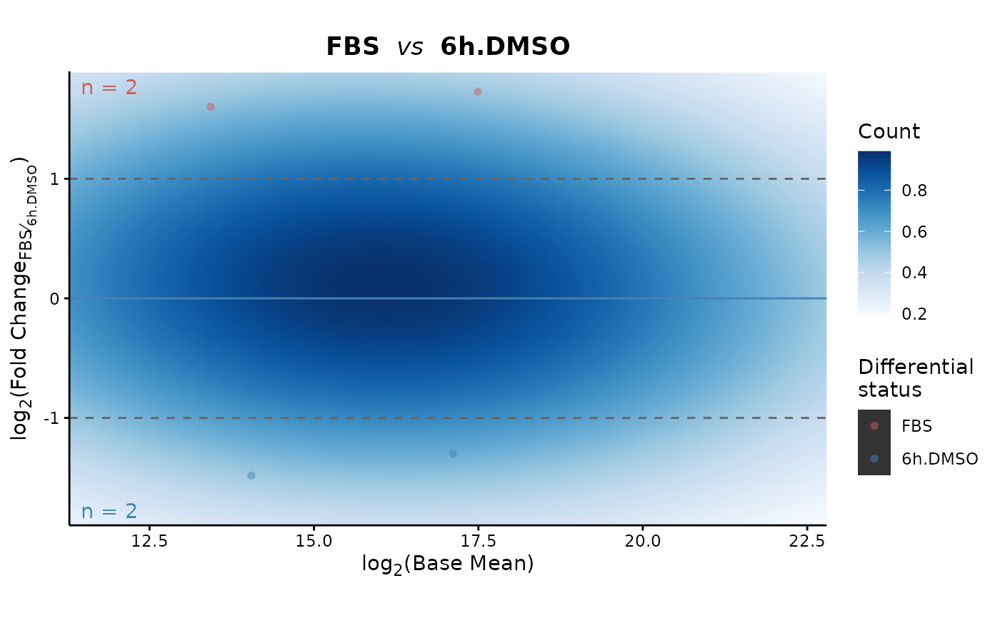

Plots a MA plot log2(basemean) x log2(FoldChange) of differential expression results
# S3 method for class 'MA'
plot(
DEprot.analyses.object,
contrast = 1,
up.color = "indianred",
down.color = "steelblue",
density.colors = colorRampPalette(colors = RColorBrewer::brewer.pal(9, "Blues"))(101),
point.size = 2,
point.alpha = 0.5,
title = NULL,
use.uncorrected.pvalue = FALSE,
symmetric.y = TRUE,
dot.labels = NULL,
labels.in.boxes = FALSE,
label.font.size = 2,
label.max.overlaps = 100,
min.segment.length.labels = 0
)An object of class DEprot.analyses.
Number indicating the position of the contrast to use for the plotting.
String indicating the color to use for up-regulated proteins in the plots. Default: "indianred".
String indicating the color to use for up-regulated proteins in the plots. Default: "steelblue".
List of colors, passed to scale_fill_gradientn, to use for the density gradient. Default: "colorRampPalette(colors = RColorBrewer::brewer.pal(9, "Blues"))(101)".
Numeric value indicating the size of the dots. Default: 2.
Numeric value between 0 and 1 to indicate the transparency (alpha) of the dots. Default: 0.5.
String indicating the title to use. Default: NULL (automatic title).
Logical value indicating whether it should be used the normal p-value instead of the adjusted one (differential proteins numbers are recomputed). Default: FALSE, padj is used.
Logical values indicating whether the y-axis scale should be symmetric or not. Default: TRUE.
String vector indicating labels to show on the plot that should correspond to prot.id column values. Default: NULL (no labels shown).
Logical value indicating whether the labels should be visualized as boxes. Default: FALSE.
Numeric value indicating the size to use for the dot labels. Default: 2.
Numeric value indicating the maximum number of overlaps allowed between labels. Default: 100.
Numeric value indicating the minimal length of the segments that connect the labels to the points. Default: 0 (segment always shown).
A ggplot object.
plot.MA(DEprot.analyses.object = DEprot::test.toolbox$diff.exp.limma, contrast = 1) +
ggplot2::ylab("log<sub>2</sub>(Fold Change FBS/6h.DMSO)")
#> Warning: Removed 400 rows containing missing values or values outside the scale range
#> (`geom_raster()`).
